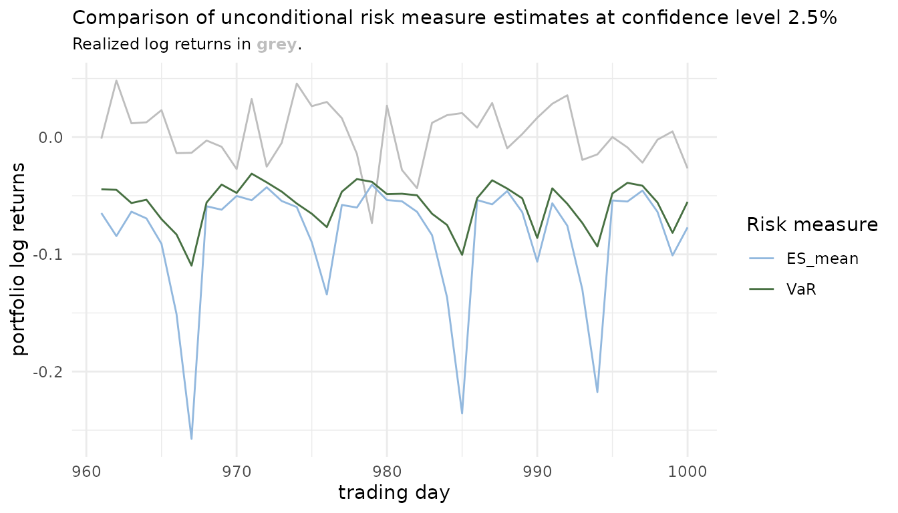
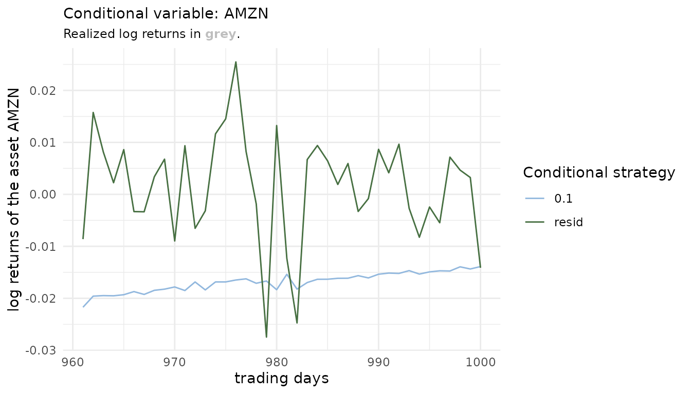
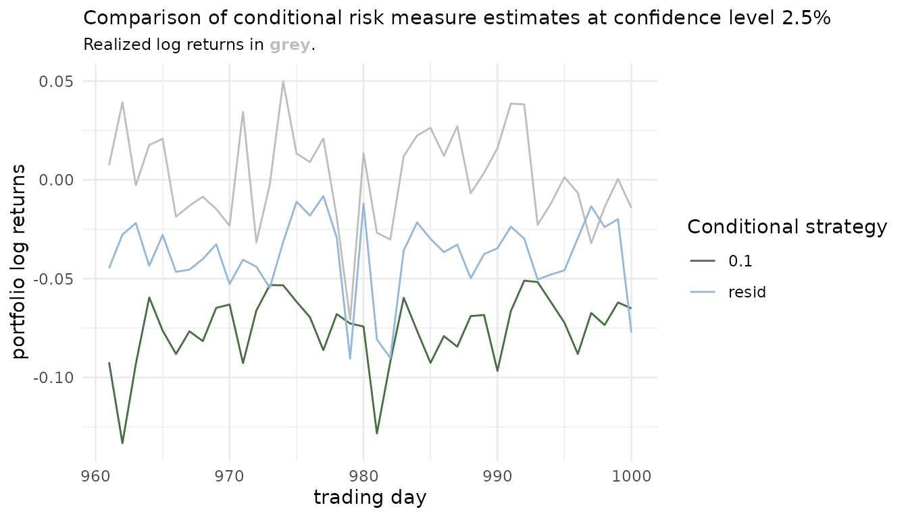

In order to get up to speed with the portvine package
you will find in this vignette:
- Exemplary workflows for the unconditional and conditional risk measure estimation
- Opinionated visualization functions not included in the package
- Some notes on backtesting the estimated risk measures
What you do not find here is a theoretical description of the algorithms. For this purpose there is the Under the hood article on the package website and actually it is probably most often the better idea to start off with the theoretical view. For a very detailed theoretical view with lots of illustrations and two case studies have a look at my thesis - Sommer (2022).
Setup
#################### required ####################
library(portvine)
#################### optional ####################
## the following packages are only necessary for the visualizations
# for visualization:
library(ggplot2)
library(patchwork)
theme_set(
theme_minimal() +
theme(plot.title = ggtext::element_markdown(size = 11),
plot.subtitle = ggtext::element_markdown(size = 9))
)
# some data wrangling for visualizations
library(dplyr)
library(tidyr)The sampling within the estimation algorithms is reproducible with a fixed seed (this also holds for parallel processing).
set.seed(2)The data set
With the package comes a small test data set containing 1000 daily log returns of 3 stocks (Apple ~ AAPL, Alphabet ~ GOOG and Amazon ~ AMZN).
data("sample_returns_small")
head(sample_returns_small)
#> AAPL GOOG AMZN
#> 1: 0.005221515 -0.0063910288 -0.016940943
#> 2: 0.019702688 0.0232542613 0.016639145
#> 3: 0.019878308 -0.0006788564 -0.004209719
#> 4: -0.005595481 0.0065947671 -0.000176859
#> 5: -0.024806737 -0.0049333142 0.009580031
#> 6: 0.015416878 0.0113819042 0.018446965
dim(sample_returns_small)
#> [1] 1000 3So as one financial year is comprised of roughly 250 days one has the data of roughly 4 years. The aim is now to estimate portfolio level risk measures for the last 40 days i.e. the interval \([960,1000]\). For a realistic scenario this would of course be a very short window. First one specifies the marginal assetwise time series models.
Specify marginal models
In practice one would for example like to refit the marginal models every two months which is in trading days roughly 50 days, but here we will refit every 20 days. The training data size is already specified by the interval of interest i.e. here one uses the whole available past of the first marginal window which has the size 960.
The unconditional case
Here in the unconditional case one will not deviate from the default
thus for all marginal models an ARMA(1,1)-GARCH(1,1) model is fitted.
The default model can be assessed via the function
default_garch_spec().
default_garch_spec()
#>
#> *---------------------------------*
#> * GARCH Model Spec *
#> *---------------------------------*
#>
#> Conditional Variance Dynamics
#> ------------------------------------
#> GARCH Model : sGARCH(1,1)
#> Variance Targeting : FALSE
#>
#> Conditional Mean Dynamics
#> ------------------------------------
#> Mean Model : ARFIMA(1,0,1)
#> Include Mean : TRUE
#> GARCH-in-Mean : FALSE
#>
#> Conditional Distribution
#> ------------------------------------
#> Distribution : sstd
#> Includes Skew : TRUE
#> Includes Shape : TRUE
#> Includes Lambda : FALSEThe marginal model specifications are then collected in a
marginal_settings object as shown below.
uncond_marg_settings <- marginal_settings(
train_size = 960,
refit_size = 20
)The conditional case
For the conditional case one will use a more individual specification. One changes the default to an ARMA(1,2)-GARCH(1,1) model while sticking with the default for the Amazon stock.
cond_marg_settings <- marginal_settings(
train_size = 960,
refit_size = 20,
individual_spec = list("AMZN" = default_garch_spec()),
default_spec = default_garch_spec(ma = 2)
)The next step is to specify the settings for the vine fitting.
Specify vine copula models
Here one would like to refit the vine copula models every 10 or 20 days which is allowed by the package as 20 is dividable by 10. One would like to capture the dependence on a training set of 100 trading days for each rolling window.
The unconditional case
For the unconditional case one will use the default
vine_type which is the R-vine. For the bivariate building
blocks of the vine copula one will restrict oneself to the single
parametric pair copulas. For other possible choices have a look at the
help page of the function rvinecopulib::bicop().
uncond_vine_settings <- vine_settings(
train_size = 100,
refit_size = 10,
family_set = "onepar", # valid bivariate building blocks
vine_type = "rvine"
)The conditional case
In the conditional case up to now only D-vine copulas are allowed. As copula families one will pick some arbitrary ones for this example. Note that “parametric” would be the most nonrestrictive valid option here.
cond_vine_settings <- vine_settings(
train_size = 100,
refit_size = 20,
family_set = c("gumbel", "joe", "t"),
vine_type = "dvine"
)Now one is ready to perform the actual risk measure estimation.
Estimate the risk measures
The risk measures should be estimated at both popular confidence levels 1% and 2.5%. In terms of risk measures one would like to estimate the Value at Risk (VaR) and the expected shortfall (ES) with mean estimation based on here a very small and not realistic sample size of 50. A realistic one would be 100000.
The unconditional case
Here an equally weighted portfolio of the three stocks is assumed
thus one can leave the default NULLvalue for the
weights argument. The trace argument set to
TRUE will trigger the printing of some basic information
during training. This workhorse function of the package is very well
suited for parallel and even nested parallel processing. For details
have a look at the help page and consult the article covering the
parallel processing on the package website for some performance
measurements. Down below one can facilitate basic parallel processing by
just using the commented code.
## specify parallel strategy
# future::plan("multisession", workers = 4)
uncond_risk_roll <- estimate_risk_roll(
data = sample_returns_small,
weights = NULL,
marginal_settings = uncond_marg_settings,
vine_settings = uncond_vine_settings,
alpha = c(0.01, 0.025),
risk_measures = c("VaR", "ES_mean"),
n_samples = 50,
trace = TRUE
)
#>
#> Fit marginal models:
#> AAPL GOOG AMZN
#>
#> Fit vine copula models and estimate risk.
#> Vine windows:
#> (1/4) (2/4) (3/4) (4/4)
## return to default sequential settings (cut off any background processes)
# future::plan("sequential")Having estimated the risk measures one can get a short and more detailed summary of the process by printing the object and calling the summary method.
uncond_risk_roll
#> An object of class <portvine_roll>
#> Number of ARMA-GARCH/ marginal windows: 2
#> Number of vine windows: 4
#> Risk measures estimated: VaR ES_mean
#> Alpha levels used: 0.01 0.025
#>
#> Time taken: 0.1557 minutes
summary(uncond_risk_roll)
#> An object of class <portvine_roll>
#>
#> --- Marginal models ---
#> Number of ARMA-GARCH/ marginal windows: 2
#> Train size: 960
#> Refit size: 20
#>
#> --- Vine copula models ---
#> Number of vine windows: 4
#> Train size: 100
#> Refit size: 10
#> Vine copula type: rvine
#> Vine family set: onepar
#>
#> --- Risk estimation ---
#> Risk measures estimated: VaR ES_mean
#> Alpha levels used: 0.01 0.025
#> Number of estimated risk measures: 160
#> Number of samples for each risk estimation: 50
#>
#> Time taken: 0.1557 minutes.The conditional case
The package currently supports up to two conditioning assets. Here
the single conditional case will be covered but the double conditional
case is almost identical. One will choose the Amazon stock to be the
conditioning asset (via the cond_vars argument).
Furthermore one will give the Alphabet stock a greater weight and the
weight of the conditioning asset must of course be zero. Note that the
weights for example according to market capitalization can be even
changing on the vine window granularity level. The cond_u
argument then specifies the quantile level of the conditioning value. So
a small quantile level will emulate the behavior of a very weak
performance of the conditioning Amazon stock. Details on all arguments
are given on the help page.
cond_risk_roll <- estimate_risk_roll(
data = sample_returns_small,
weights = c("AAPL" = 1, "GOOG" = 2, "AMZN" = 0),
marginal_settings = cond_marg_settings,
vine_settings = cond_vine_settings,
alpha = c(0.01, 0.025),
risk_measures = c("VaR", "ES_mean"),
n_samples = 50,
cond_vars = "AMZN",
cond_u = 0.1
)Having estimated the conditional risk measures one can again get a short and more detailed summary of the process by printing the object and calling the summary method.
cond_risk_roll
#> An object of class <cond_portvine_roll>
#> Conditional variable(s): AMZN
#> Number of ARMA-GARCH/ marginal windows: 2
#> Number of vine windows: 2
#> Risk measures estimated: VaR ES_mean
#> Alpha levels used: 0.01 0.025
#>
#> Time taken: 0.1596 minutes
summary(cond_risk_roll)
#> An object of class <cond_portvine_roll>
#>
#> --- Conditional settings ---
#> Conditional variable(s): AMZN
#> Number of conditional estimated risk measures: 320
#> Conditioning quantiles: 0.1
#>
#> --- Marginal models ---
#> Number of ARMA-GARCH/ marginal windows: 2
#> Train size: 960
#> Refit size: 20
#>
#> --- Vine copula models ---
#> Number of vine windows: 2
#> Train size: 100
#> Refit size: 20
#> Vine copula type: dvine
#> Vine family set: gumbel joe t
#>
#> --- Risk estimation ---
#> Risk measures estimated: VaR ES_mean
#> Alpha levels used: 0.01 0.025
#> Number of estimated risk measures: 160
#> Number of samples for each risk estimation: 50
#>
#> Time taken: 0.1596 minutes.Assess marginal model quality
In order to extract the marginal models one can use the function
fitted_marginals(). The result is a named list with a
rugarch::ugarchroll object for each asset. These objects
contain all fitted marginal time series models.
names(fitted_marginals(uncond_risk_roll))
#> [1] "AAPL" "GOOG" "AMZN"For the extraction of the fitted residuals for a residual analysis
the portvine package further provides the utility function
roll_residuals(). In the following an opinionated
visualization function useful for a visual residual analysis is given
and used. It allows to visualize the raw standardized residuals, the
empirical autocorrelation function of them and the results (p-values) of
Ljung-Box tests for serial correlation at different lags. This is useful
to assess the appropriateness of the mean equation of the ARMA-GARCH
model. In order to assess the volatility equation one can have a look at
the same visualization for the squared standardized residuals. As the
function is highly opinionated it was not integrated in the
portvine package.
# An opinionated function for residual analysis. Note this function has no
# input checks and is not tested in any ways.
# Output: named list with a composition of residual plots for each asset
marg_resid_viz_list <- function(
roll, # portvine_roll or cond_portvine_roll object
asset_names = NULL, # filter for certain assets
marg_window = 1, # specify a marginal window
squared = FALSE # if set to true the results for the squared stand. residuals
# are displayed
) {
fitted_marginals <- fitted_marginals(roll)
if (is.null(asset_names)) asset_names <- fitted_vines(roll)[[1]]$names
sapply(
asset_names,
function(asset_name) {
# use again a utility function from the portvine package to extract the
# fitted standardized residuals
model_resid <- roll_residuals(
fitted_marginals[[asset_name]], marg_window
)
if (squared) model_resid <- model_resid^2
simple_exploratory <- data.frame(resid = model_resid) %>%
mutate(id = seq(length(model_resid))) %>%
ggplot(aes(x = id, y = resid)) +
geom_line(size = 0.2) +
labs(x = "t", y = ifelse(squared, expression(z[t]^2),expression(z[t])),
title = asset_name) +
theme(axis.text.x = element_blank(),
axis.ticks.x = element_blank())
acf_plot <- data.frame(
acf = as.numeric(acf(model_resid, type = "cor", lag.max = 20,
plot = FALSE)$acf),
lag = 0:20
) %>%
filter(lag != 0 & lag <= 10) %>%
ggplot() +
geom_hline(yintercept = 0, col = "black", size = 0.3) +
geom_hline(yintercept = qnorm(c(0.025, 0.975)) /
sqrt(length(model_resid)),
linetype = "longdash", col = "#92B8DE", size = 0.5) +
geom_segment(aes(x = lag, xend = lag, y = 0, yend = acf)) +
geom_point(aes(x = lag, y = acf)) +
scale_x_continuous(breaks = seq(1, 10, 1)) +
ylim(-1, 1) +
labs(x = "h", y = "ACF(h)")
ljungplot <- data.frame(
pval = sapply(
1:10,
function(i) Box.test(model_resid, lag = i,
type = "Lju")$p.value),
lag = 1:10) %>%
ggplot() +
geom_hline(yintercept = 0, col = "black", size = 0.3) +
geom_hline(yintercept = 0.05,
linetype = "longdash", col = "#92B8DE", size = 0.5) +
geom_line(aes(x = lag, y = pval)) +
geom_point(aes(x = lag, y = pval)) +
scale_x_continuous(breaks = seq(1, 10, 1)) +
labs(x = "h", y = "p-value of Ljung-Box test at lag h")
(simple_exploratory / (ljungplot + acf_plot)) +
plot_layout(nrow = 2)
}, USE.NAMES = TRUE, simplify = FALSE)
}Apply the function to the result of the unconditional estimation and display the residual plots for Apple and Alphabet.
uncond_residual_viz <- marg_resid_viz_list(uncond_risk_roll)
#> Warning: Using `size` aesthetic for lines was deprecated in ggplot2 3.4.0.
#> ℹ Please use `linewidth` instead.
uncond_residual_viz_squared <- marg_resid_viz_list(
uncond_risk_roll, squared = TRUE
)
uncond_residual_viz$AAPL
uncond_residual_viz_squared$GOOG
For a better overview of all assets, especially in higher dimensions, a heatmap with the p-values of the Ljung-Box tests can be useful. For this I will now showcase another opinionated utility function.
# The function creates a heatmap of Ljung Box test p-values for a
# (cond-)portvine_roll object. Note this function again has no
# input checks and is not tested in any ways.
# Output: The heatmap (ggplot2 object)
ljung_heatmap <- function(roll, roll_num = 1, squared = FALSE) {
asset_names <- fitted_vines(roll)[[1]]$names
roll_marginals <- fitted_marginals(roll)
ljung_data <- sapply(asset_names, function(asset_name) {
model_resid <- roll_residuals(
roll_marginals[[asset_name]], roll_num = roll_num
)
if (squared) model_resid <- model_resid^2
sapply(
1:10,
function(i) Box.test(model_resid, lag = i, type = "Lju")$p.value
)
}, USE.NAMES = TRUE, simplify = TRUE)
ljung_data <- ljung_data %>%
as.data.frame() %>%
mutate(lag = seq(nrow(ljung_data))) %>%
pivot_longer(-lag, names_to = "asset", values_to = "pval")
if (all(ljung_data$pval >= 0.05)) {
legend_scale <- scale_fill_gradient(
low = "#92B8DE", high = "#2a82db"
)
} else {
legend_scale <- scale_fill_gradientn(
colours = c("#db4f59","#C37285" ,
"#92B8DE", "#2a82db"),
values = scales::rescale(c(0, 0.05 - 0.01, 0.05, 1)),
breaks = c(0.05),
labels = c(0.05),
guide = guide_colourbar(nbin = 1000))
}
ljung_data %>%
ggplot(aes(x = lag, y = asset, fill = pval)) +
geom_tile() +
scale_x_continuous(breaks = 1:10) +
labs(y = "", x = "h", fill = "p-value",
title = "Results of the Ljung-Box tests",
caption = paste("Rolling window:", roll_num)) +
legend_scale +
theme(legend.position = "right",
panel.grid.minor.x = element_blank())
}This time one uses the result of the conditional risk measure estimation for a display of the function for the residual analysis. \(h\) again denotes the lag.
ljung_heatmap(uncond_risk_roll)P-values lower than 0.05 would be highlighted in red on the heatmap for easy spotting.
A look at the fitted vine copulas
Next up one can have a look at the fitted vine copulas. For this
again a utility function is available in the portvine
package. The function fitted_vines() extracts all fitted
vines in a list, one vine copula object for each vine window.
uncond_fitted_vines <- fitted_vines(uncond_risk_roll)
uncond_fitted_vines[[3]]
#> 3-dimensional vine copula fit ('vinecop')
#> nobs = 100 logLik = 56 npars = 3 AIC = -106 BIC = -98.19As the list elements are rvinecopulib::vinecop objects
one can further analyze them with tools from the great rvinecopulib
package e.g. plot the objects to exploit the graphical representation,
which aids interpretability.
Analyze the risk measure estimates
The last utility function that is presented in this vignette is
risk_estimates() and as the name suggests it can be used to
easily extract the risk measure estimates from the estimation result
object. One can not only filter by the risk measure, confidence levels
but also choose between an output as data.frame or
data.table. Moreover optionally it calculates a logical
column indicating whether the risk measure was exceeded.
## a glimpse at the tidy data.frame with all estimated risk measures
head(risk_estimates(uncond_risk_roll), 10)
#> risk_measure risk_est alpha row_num vine_window realized
#> 1 VaR -0.06188025 0.010 961 1 -0.001246766
#> 2 VaR -0.04601638 0.025 961 1 -0.001246766
#> 3 ES_mean -0.07602761 0.010 961 1 -0.001246766
#> 4 ES_mean -0.06159152 0.025 961 1 -0.001246766
#> 5 VaR -0.08681665 0.010 962 1 0.048242745
#> 6 VaR -0.04667800 0.025 962 1 0.048242745
#> 7 ES_mean -0.12238695 0.010 962 1 0.048242745
#> 8 ES_mean -0.08609073 0.025 962 1 0.048242745
#> 9 VaR -0.06523401 0.010 963 1 0.011817887
#> 10 VaR -0.05740317 0.025 963 1 0.011817887
## a glimpse at the estimated VaR at confidence level 1% with exceeded column
head(
risk_estimates(
uncond_risk_roll,
risk_measures = "VaR",
alpha = 0.01,
exceeded = TRUE
),
6
)
#> risk_measure risk_est alpha row_num vine_window realized exceeded
#> 1 VaR -0.06188025 0.01 961 1 -0.001246766 FALSE
#> 2 VaR -0.08681665 0.01 962 1 0.048242745 FALSE
#> 3 VaR -0.06523401 0.01 963 1 0.011817887 FALSE
#> 4 VaR -0.07158635 0.01 964 1 0.012662108 FALSE
#> 5 VaR -0.09355120 0.01 965 1 0.023044956 FALSE
#> 6 VaR -0.16243081 0.01 966 1 -0.013655480 FALSE
## of course also applies for the conditional case
head(
risk_estimates(
cond_risk_roll,
risk_measures = "ES_mean",
alpha = 0.01,
cond_u = c("resid", 0.1)
),
6
)
#> risk_measure risk_est alpha row_num AMZN cond_u vine_window
#> 1 ES_mean -0.10061696 0.01 961 -0.021713172 0.1 1
#> 2 ES_mean -0.04510164 0.01 961 -0.008608346 resid 1
#> 3 ES_mean -0.15587622 0.01 962 -0.019582204 0.1 1
#> 4 ES_mean -0.03063455 0.01 962 0.015758643 resid 1
#> 5 ES_mean -0.11188717 0.01 963 -0.019476899 0.1 1
#> 6 ES_mean -0.02746862 0.01 963 0.008117431 resid 1
#> realized
#> 1 0.007439544
#> 2 0.007439544
#> 3 0.039189494
#> 4 0.039189494
#> 5 -0.002692899
#> 6 -0.002692899This tidy representation can be easily used for visualizations. For example comparisons of risk measures over time.
risk_estimates(uncond_risk_roll, alpha = 0.025) %>%
ggplot() +
geom_line(aes(x = row_num, y = realized), col = "grey") +
geom_line(aes(x = row_num, y = risk_est,
col = factor(risk_measure))) +
scale_color_manual(values = c("#92B8DE", "#477042")) +
labs(x = "trading day",
y = "portfolio log returns",
col = "Risk measure",
title = "Comparison of unconditional risk measure estimates at
confidence level 2.5%",
subtitle = paste0("Realized log returns in ",
"<span style='color:",
"grey",
"'>**grey**</span>",
"."))
Or one can explore exceedances.
risk_estimates(
uncond_risk_roll,
risk_measures = c("VaR"),
alpha = 0.01,
exceeded = TRUE) %>%
ggplot() +
geom_line(aes(x = row_num, y = realized), col = "lightgrey") +
geom_line(aes(x = row_num, y = risk_est), col = "#92B8DE") +
geom_point(aes(x = row_num, y = realized), col = "#db4f59",
inherit.aes = FALSE, data = . %>% filter(exceeded)) +
labs(x = "trading days",
y = "portfolio log returns",
col = "Exceeded",
subtitle = paste0("Exceedances are highlighted in ",
"<span style='color:",
"#db4f59",
"'>**red**</span>",
"."),
title = "Risk measure: VaR with confidence level 1%"
) +
theme(legend.position = "none")
In the conditional case one can first have a look at how the different conditional strategies behave. On the one side a conditioning value based on the quantile level 0.1 was forecasted (below shown in light blue) and on the other side the residual strategy is by default set to the one that uses the realized residuals (below shown in green, it should almost overlay the grey realized line). Those are only for the comparison as they conceptually are an oracle as the actual realized conditional asset returns would not be known at sampling time.
risk_estimates(
cond_risk_roll,
risk_measures = "ES_mean",
alpha = 0.01) %>%
ggplot() +
geom_line(
data = sample_returns_small[961:1000, "AMZN"],
aes(x = 961:1000,
y = AMZN), col = "grey", size = .3) +
geom_line(aes(x = row_num, y = AMZN, col = factor(cond_u)),
size = 0.5) +
scale_color_manual(values = c("#92B8DE", "#477042"),
name = "Conditional strategy") +
labs(title = "Conditional variable: AMZN",
x = "trading days", y = "log returns of the asset AMZN",
subtitle = paste0("Realized log returns in ",
"<span style='color:",
"grey",
"'>**grey**</span>",
"."))
Then one can compare the resulting conditional risk measure estimates.
risk_estimates(cond_risk_roll, alpha = 0.025, risk_measures = "ES_mean") %>%
ggplot() +
geom_line(aes(x = row_num, y = realized), col = "grey") +
geom_line(aes(x = row_num, y = risk_est,
col = factor(cond_u))) +
scale_color_manual(values = c("#477042", "#92B8DE")) +
labs(x = "trading day",
y = "portfolio log returns",
col = "Conditional strategy",
title = "Comparison of conditional risk measure estimates at
confidence level 2.5%",
subtitle = paste0("Realized log returns in ",
"<span style='color:",
"grey",
"'>**grey**</span>",
"."))
This is of course just the tip of the iceberg and countless other visualizations are possible at that point. Especially for multiple conditional quantile levels in a stress testing scenario. An especially promising comparison is the one comparing multiple levels of quantile based risk measure estimates with the respective unconditional one. This allows to assess how well the unconditional approach accounts for the market risk on the portfolio associated with fluctuations of the conditional asset(s).
The interpretation is left out for these exemplary workflows. Detailed case studies can again be found in Sommer (2022).
Backtesting the estimated risk measures
The risk measure estimation performed is in many cases performed with
the goal of backtesting in mind. This can be easily achieved given the
objects returned by the estimate_risk_roll() function. As
there are already excellent resources for performing these here are some
suggestions for implementations that can be applied in this portfolio
level setting:
-
Value at Risk backtesting: The package
rugarchcontains the straightforward to use functionrugarch::VaRTest(). It features classical backtests based on violation sequences. -
Expected shortfall backtesting: The package
esbackcontains a suite of easy to use and theoretically backed backtests for the expected shortfall.